|
An Introduction to
AMATEUR
RADIOTELETYPE 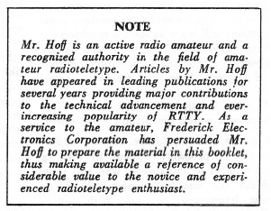 Irvin M. Hoff, K8DKG Frederick Electronics Corporation Frederick, Maryland
As is true with any hobby, amateur radio teletype will probably appeal to only a limited number of individuals who will wish to obtain the equipment and use it on amateur frequencies to “talk with” other equally-interested individuals. I don't know what type of individual this person may be. but this booklet is being written for him—to give an overall picture of what is being done with amateur radio teletype today as well as background information which will enable this person to assernble, connect and operate the necessary equipment to not only print incoming radio teletype signals but to transmit as well. assuming he is already a licensed radio amateur. Perhaps we should point out that it takes no license to merely copy signals from the air, as it is possible some readers may wish only to receive and not transmit--several of my friends are not radio amateurs at all, hut are still capable of printing conversatons from amateurs. FORMS OF AMATEUR RADIO There are nearly a-s many different aspects of amateur radio as there are amateurs with imagination. Some individuals like to handle traffic from the servicemen overseas; some are interested in Civil Defense work; some see how many foreign countries they can contact; some like to use Morse code while others prefer voice communication; some like to buy all their equipment and a few-build everything; some fellows are Primarily interested in technical subjects while others prefer talking about the weather; some branch off into associated fields such as moon bounce. VHF. research, amateur television and of course our present discussion — amateur radio teletype. This list is far from complete but shows the versatility that is available to the enthusiast interested in radio communication. Eventually such a person will necessarily develop an interest in one of the aspects of amateur radio perhaps more than the others. particularly if that aspect offers a: the same time an opportunity for personal pleasure as well as advancement of skills and knowledge. Just picking up this publication shows some interest in the field of radio teletype by the reader, so perhaps it is now time to mention a few things that can he done with radio teletype. THINGS THAT CAN BE DONE WITH RADIOTELETYPE
These are but a. few of the many things that may be accomplished on radio teletype —- others being equally possible. hardly a week goes by hut what some enterprising individual thinks up a new use to which the machines can he put. A majority of these schemes are involved with some form of automation or traffic-handling. Many of these ideas would appeal to you and inc if only somebody took the time to publish some of them. Fortunately, most amateurs are quite proud of their achievements and are quite willing to tell others about them in the hopes the other person might be able to use the idea or even improve it. Such exchange of information is unique to amateur radio where few individuals profit financially to any extent in the process. In this manner we all benefit. WHAT IS NEEDED? To assemble a station for receiving and transmitting radio teletype, the following would he required:
Such additional equipment also allows the operator to call "CQ” automatically. CONNECTING THE EQUIPMENT Many amateurs add all sons of things to their normal voice or Morse station such as rotary beams for better reception; oscilloscopes to show the proper modulation: phone patches for public service work; Morse monitors to hear their keyed signal; s.w.r. bridges or watt rneters to observe the condition of the antenna and to assure optimum loading of the transmitter; timer clocks to make legal 10-minute identifications — the list could continue for some time and is limited primarily by the operator’s available space. finances and enthusiasm. Adding radioteletype equipment, then, is really no more difficult than adding most of the items just mentioned. No attempt will be made in this publication to present a reference text containing information on each machine or each possible way to connect a station —rather we shall include a minimum of information in the hope that more clarity will result. After the reader has digested the information contained, he then can tackle some of the more advanced material available with the knowledge that he has at least one good working method available. In the process of writing a simplified condensation with specific recommendations. the author’s preferences must necessarily be presented. We hope the reader will not object if something he previously has heard or read is not included. There are other methods of doing things as welt but always in the background are basic facts upon which the subject is centered. Do not develop a dosed mind that the methods presented here are the only way to do things, but keep in mind they are a simple and yet effective method that works. New systems are being developed and you yourself could easily be one of the individuals coming up with the next idea we all would like to hear about. OBTAINING ADDITIONAL INFORMATION Several periodicals are published primarily for those interested in amateur radioteletype. One such booklet is published monthly by Merrill L Swan. W6AEE, It is called THE RTTY BULLETIN. The majority of ideas developed by amateurs themselves appear in that publication. CQ magazine for a number of years has run a column by Byron Kretzman, W2JTP. each month in addition to occasionally publishing articles on some phase of this- subject. Fred DeMotte, W4RWM, publishes the FLORIDA RTTY BULLETIN monthly and newsy items of general interest are contained together with extensive classified ads of interest to teletype enthusiasts. My own series of articles on radioteletype started in the QST magazine published by ARRL in January 1965 and ran throughout the year. Other authors have and will contribute to that magazine as well. OBTAINING A TELEPRINTER Everything is dependent of course in getting some of the equipment in the first place. fly getting one of the publications just mentioned, the classified ads will usually include available equipment and normally the price will he included. Certain organizations have been incorporated in a few states such as New York, Illinois. Michigan arid California to name a few, where machines obtained through the Bell System can be purchased at very low prices—usually that of the equivalent junk weight price. A letter to ARRL headquarters should also bring a list of available sources. The classified ads in other amateur publications often list equipment for sale and at times it becomes available through surplus outlets to MARS members. Occasionally surplus commercial stores have. used military items for quite reasonable prices. WHAT TO OBTAIN The main item needed will be the printer. There are two types—the “page printer” and the “strip printer”. Since even a short conversation would use a lot of tape on the strip printer, these are of almost no interest to the amateur and can be obtained for as low as $10. Their primary value is for spare parts for other machines. There are several types of page printers by several different companies. Since only the Teletype Corporation printers are generally available, only those will he discussed. Typical Teletype- printers carry the commercial designation such as 15. 19, 26, 28, and 32. The 32 is the newest, but the 28 is the most versatile for the advanced enthusiast. However, the model 28 is difficult to obtain at prices the usual amateur can afford, as the more simple version usually sells used for at least $400. the model 32 can be bought new from the factory for as little as $450.
TYPICAL STATION SET UPS The most usual arrangement for a new station would include a model 15 or 26 page printer and the necessary demodulator to change the output of the receiver into d.c. pulses to operate the printer. The typical station with tape equipment would consist of the Model 15 or 26 printer plus a model 14 typing-reperforator and model 14 tape reader. A deluxe station might consist of a model 15 page printer-. a model 19 composite set and a model 14 typing-reperforator. Anybody having model 28 or 32 equipment would hardly he considered typical. but a “first class" station might consist of a model 32ASR or a model 28ASR with some of the other items already mentioned. HOOKING UP THE MACHINE Now that you have gotten your Teletype printer (with keyboard you will war to learn how to use it. Most printers that. have been removed from landline (the term used for normal circuits hooked to the phone lines or telegraph lines) have three cables dangling from them — one that goes into regular household 115 VAC : one with a red plug on the end that goes to the printer and the third which has a black ring and goes to the keyboard. The first thing necessary is to determine if the two selector magnets on the printer are hooked in series or in parallel. Take an ohmmeter and measure the d.c. resistance between the rip and the ~hell of the red plug. If it is around 50 ohms. the magnets are in parallel and need a 60 ma. circuit. If it is around 200 ohms. they are in series and need a 30 ma. circuit. To hook up the machine, the 110 VAC plug is put in the wall socket. If the motor is now turned on. the machine will run “wild” (this is actually called running ‘“open”) and no printing will result. A d.c. power supp1y will have to be constructed in order to operate the machine in a normal manner. This d.c.. supply is shown in its most simple form in Fig. 1.
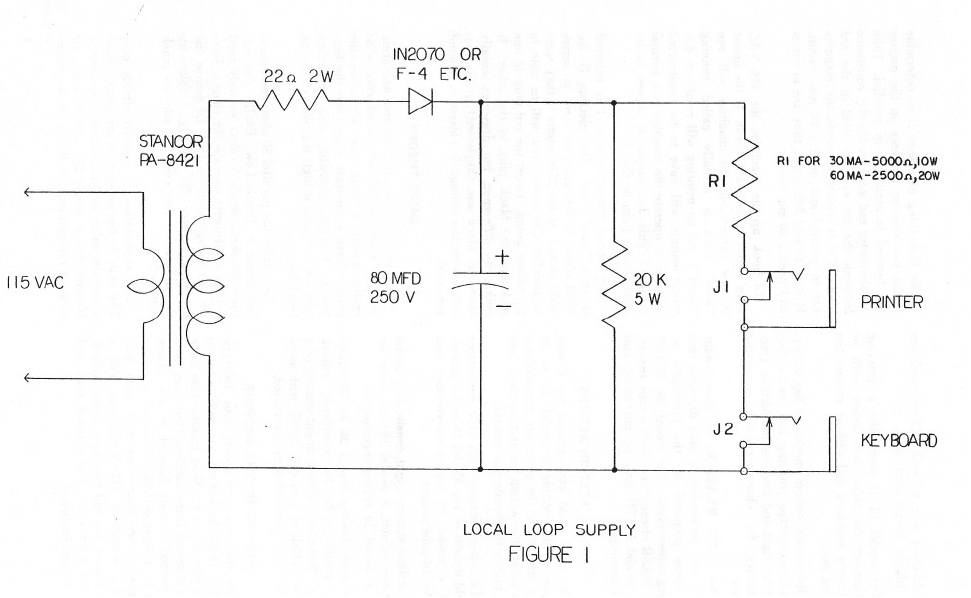 The circuit shown in Fig 1 is referred to as a “local loop”. By selecting R2 for 50000 ohm~ if the magnets were in series (200 ohms) or for 2500 ohms if they were in parallel (50 ohms) you will be able to get things going. Insert the red plug in one jack and the black plug in the other. It makes no difference, but drawings usually show the black one (keyboard) in the hot-torn where the voltage is closest to ground potential. BASIC THEORY Now that you have the machine operating you no doubt are already wondering what really makes it work and why does the printer have a separate plug from the keyboard. You are probably also wondering why we use such a high d.c. voltage on the local loop. Let’s take that parallel 50 ohms resistance. According to Ohm’s Law: E=IR, (60 ma. times. 50 ohms equals 3 volts) we only need 3 volts to properly operate the circuit Here we are using closer to 150! Of course the dropping resistor ‘R” in Fig. 1 takes up the difference, but even so, why so much voltage? The explanation is a fairly simple one. The coils in the magnet of the printer have a certain value of inductance. Around 3 Henries for a model 28. for instance, for each of the two coils.) When the keyboard is operated it alternately opens and closes he circuit much the same as an on-off switch would. When the circuit is closed after having been open. the inductance resists momentarily letting this current flow, (You are probably familiar with the smoothing action offered by a choke in a power supply—this is a similar effect, or tries to be). Unlike the power supply illustration. we want this current to flow to the maximum value as soon as possible in order to get maximum performance of the printer, Thus we “hit” the coil with a much larger voltage than is needed in order to achieve this top performance. Some military circuits use as high as 300 volts, but 120-150 is “normal. Of course the selector magnets will work with less voltage, but with poorer performance. (It is this requirement for around 120 volts d.c. that until recently has made the use of transistors somewhat difficult in optimum circuits, although some of these have worked quite well in normal circumstances where conditions were good. Newer units are using 400 volt transistors recently developed which remove earlier objections to solid state units fur driving the printer from external signal sources) Another phenomena of inductive circuits is the “spike” that is generated momentarily when the circuit is abruptly broken, This occurs constantly as the keyboard is used in Teletype circuits. For parallel circuits, this spike is typically 75 volts but for series circuits it can he as high as 150 volts. Thus if several printers are used at the same time, this spike could he of some concern. The average amateur would probably never put more than 3 printers or reperfs in the circuit at one rime, and it, this case no problems should exist, unless he was using an older solid-state circuit of some type where the transistor was only rated at 60 or 100 volts. With newer circuits, this is no concern, This same inductive spike is utilized by clever designers of radio receiving units for Teletype printers to actually assist in cutting off the circuit more abruptly when the circuit opens momentarily for a Teletype character. Many of the older tube-type units did not take this problem into account and suffered in performance as a result. RELATION TO TELEGRAPH LINES Long range communications via electrical means are really not so very old, I believe 1832 was the year given credit to telegraph circuits and it was not until 1906 that the first teleprinter as we know it, was invented by Charles Krum. It was natural that its use should follow in some respects the established practices of the telegraph system. The principal similarity was (he use of “closed current” circuits. With such a system, one operator could interrupt another for corrections, etc. by merely depressing his key, opening the line. Of course if the line inadvertently opened, no operation by anyone could result, This is actually an advantage, however, as the condition of the circuit could be immediately determined. Thus certain telegraphic practices and terms are still current in Teletype operation as well. When the circuit is complete, and no typing is being done, the machine idled When the circuit is broken, there is no current to hold the selector magnets closed, so it runs “open”. In early days of telegraph, various inventors tried to perfect systems which would automatically copy an incoming signal for later reading by the operator, or for verification of transmitted text.. Early attempts were centered around a pen which marked on a moving tape for key down, was raised above the paper tape for key-up. This became known as “marks” and “spaces”. The spaces corresponded to an open circuit. We use the same terminology in Teletype today. If the circuit is closed, this is called a “mark” and if it is open it is called a "space". In Morse operation, one dash is three dots in length; one dot length separates parts of the same character; 3 dot lengths separates characters in the same word; and 7 dot lengths separates words. This is called an “uneven length code” since each character is a different construction ranging from 4 dots for the letter “E” (including the space between the preceding character) to 22 dots for the numeral 0 (again including the 3 dot lengths from the preceding character.) As may be imagined, such an uneven length system posed serious problems to automatic reception. Thus the Teletype machine was based on an entirely different system—called an “even length” code. In this method, each character has the same over-all construction, differing only in the type of pulses contained, not in number. You certainly have often heard the term “digital” used in reference to computers and other data equipment. Basically speaking the Teletype machine is an early form of a digital data system. In a digital system a pulse may be either open or closed, or more correctly on or off. A Teletype machine then has 5 pulses carrying information for each character. It also has a “start” pulse which is always “off" (space or open circuit) at the beginning to start things going on each character. At the end of the 5 information pulses is a “stop” pulse, which is always “on” or closed (mark). You can refer to these in any way you like and probably be correct as long as you realize the teletype-machine works from on-off pulses. Each of the 5 information pulses which follow the start pulse may be either on or off, thus giving some 32 possible combinations. (For the mathematicians in the crowd 25 = 32 An ‘R” for instance has the 2nd and 4th pulses “on” with the 1st .3rd, and 5th “off”. The “Y” character is just the opposite with the- 1st, 3rd, and 5th being on and the 2nd and 4th being off. Pictures are often drawn showing one of these characters, but perhaps Fig. 2 would explain it as well or better without the usual reference to actual pulse times.
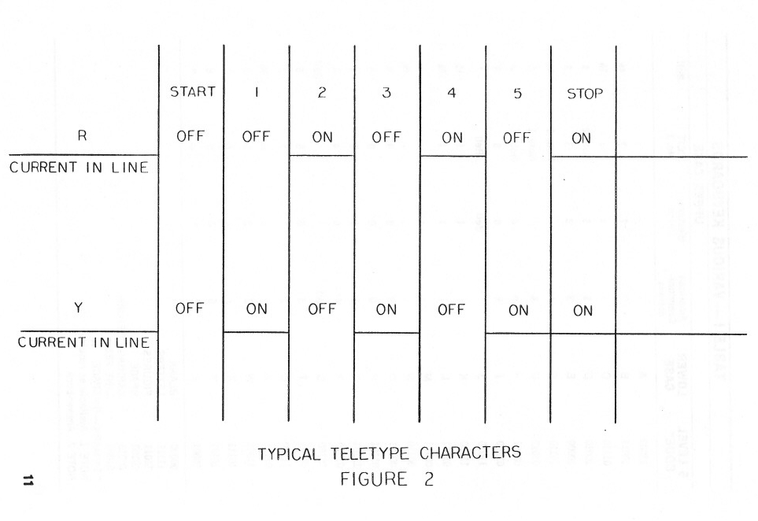 Since the “K” and “V" are exactly the opposite from each other with respect to the 5 information pulses. these two keys are often alternated to test the circuit. You will often see a line of: RYRYRYRYRYRY while copying various commercial circuits. (they often send these to keep a circuit running for adjustment purposes when no information needs to be transmitted.) While speaking of circuit adjustments, another popular test method is to use: THE QUICK BROWN FOX JUMPS OVER THE LA7Y DOGS BACK 1234567890 We showed earlier that only .32 possible combinations of 5 pulses are possible. There are 26 characters in the alphabet used in the English language, so this only leaves 6 other possible things- They are used as follows:
32 total (I) Business type------the Bell system machines normally are in this category. Many of the upper-case characters are fractions, like ¼ ½ 3/8 etc. The characters can be removed and exchanged with other types if needed. The corresponding key tops on the keyboard pull off readily on the model 15 and 14 machines and can be easily exchanged with other types. Different key levers for the keyboard are available for the model 28 and model 32 printers. (2) Weather type—these are for Weather Bureau use, and since they are usually purchased by the government F.A.A., they seldom show up in amateur hands. however, the Bell System places some of these machines on lease to the airlines and it is possible you may get one. These machines have certain unusual characters designating cloud coverage and wind direction in the upper-case position. (3) Communications type. This is the style that you will be interested in as an amateur. In the event you should see a machine with the bell being over the “J” key rather than over the “S” key. this was probably a Western Union machine, in which case it will have a few minor differences on the upper-case position. Again. these can be changed to correspond to other communications machines. I should point out though, that a few amateurs never bother with upper-case at all since they have never bothered changing their machine from business type, etc. This person usually never even sends commas or periods-—usually using a few extra spaces at the end of the line instead! Refer to Table I for keyboard arrangements and 5 level code format.
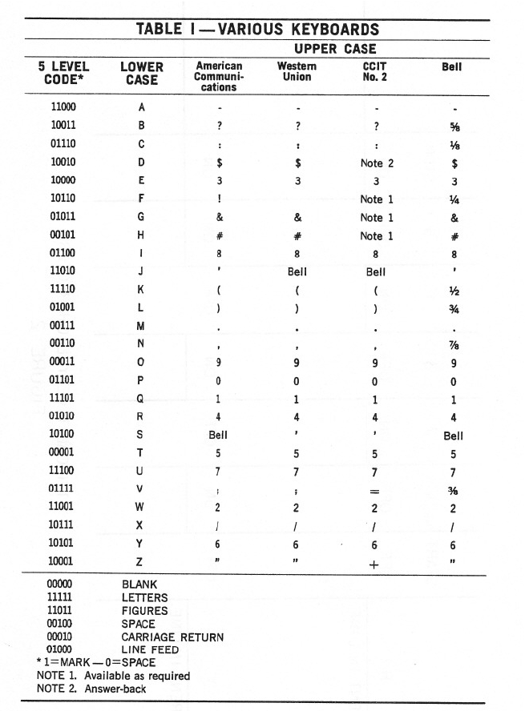 Now to explain why the Teletype machine has a separate cable coming out for the keyboard and the printer. In a normal type. writer, the keys are connected mechanically to the typing bar, so when a key is depressed it causes the typing bar to be thrown against the paper. This is considerably different from the way a Teletype machine works, although at the first glance some models such as the Model 15 appear to be nothing more than an oversized typewriter—the keyboard is somewhat similar, there is a typebasket that looks quite like a typewriter and the unit seems to work about the same in general when used on a local loop. It would be quite difficult to explain exactly how the keyboard operates on a ‘Teletype machine without involved diagrams and text. Essentially when a key is depressed. it causes five long bars below the keyboard to slide to the left or right a small amount— the direction moved depending on the character depressed. These bars then control whether the corresponding pulse will be mark or space (closed circuit or open circuit.) In the meanwhile depressing the key also trips a clutch on a cam that works directly from the motor shaft. As this cam rotates a series of contacts opens or closes consecutively depending on the position of the sliding code bars set up by the key depressed. Thus the keyboard does not control the printer mechanically at all, hut consists primarily of a group of electrical contacts that are opened or closed to provide the intonation to the printer. The printer works in a somewhat similar manner, changing these electrical pulses back into mechanical motion to operate the type basket. The motor operates a shaft going to the printer as well as the cam for the keyboard. As long as no on-off impulses are fed to the printer, it will remain idling (assuming of course the selector magnets are hooked to the loop supply) When a “start” pulse comes through (a start pulse is always "space" or “off”) the selector magnets momentarily release, tripping a “stop cam” on the main shaft clutch, and the selector cam sleeve then starts to rotate. On this cam sleeve are 5 different projections in consecutive order. If the magnet is open at the time the particular cam projection comes around, it will trip a selector lever which in turn operates a code bar. As the cam sleeve finishes a complete rotation, all five code bars have been positioned either left or right depending upon the character transmitted. With all code bars selected, one of the printing bars can now fall forward a little. A bail bar then operates, catching this printing bar and flinging it against the platen. Thus printing occurs. This entire operation occurs each time any of the keys is depressed on the keyboard, although some of the functions such as the carriage return do not actually print anything on the paper, This general explanation is necessarily brief and perhaps even a little vague. The primary thing to remember is that the keyboard generates electrical pulses corresponding to the key depressed, and the printer uses electrical pulses to determine what character to print. With this in mind, you are now in a position to fully understand why the keyboard may be used on a separate line to cut tape while the printer remains printing something different. I know this took me quite awhile to fully understand, so I hope the explanation will make things more easily understood. As an example, you may have the printer copying an incoming signal while using the keyboard to cut tape for an immediate answer at machine speed. (Most amateurs seldom use tape, and just type directly on the keyboard as best as they can. since a relatively small number are able to type substantially faster than the nominal 60 speed amateurs are allowed to use.) One technical aspect remains—the range selector and its adjustment. This is provided on all machines in order to set the response of the particular machine to its optimum point. The range selector is located in the vicinity of the selector magnets, and is usually calibrated from 0 to 120, The operation of the Teletype machine uses only about 20% of each pulse to determine if it is a mark or space pulse. Consequently about 80% of the pulse is nor needed. The range selector is then adjusted so that the center 20% is used, giving maximum protection against an incoming signal whose pulses are distorted. The range selector is adjusted while receiving copy from either the local loop or an incoming signal. A minimum setting at which normal printing results is noted and then the selector is moved to the other end of he scale and a maximum reading is noted. The selector is then set in the middle of these two extremes. Usually after this optimum setting has been determined no further adjustment is needed unless the machine receives some mechanical adjustment due to replaced parts age. This adjustment can be and indeed should he made by the owner. A typical setting would be around 60-65 on the scale. CHANGING TO PARALLEL On many of the machines. a switch has been installed on the rear which allows the selector magnets to be changed immediately from series to parallel. Otherwise, a simple change with a screwdriver will place the magnets in parallel — once the chance has been made, there will be no reason to again change it for the life of the machine. A check with an ohmmeter will determine if the wiring is correct. It is possible of course to have parallel wiring and still get no results from the printer. In this case the coils are connected out of phase and are bucking each other. Reversing the wires to one of the two coils will provide normal results. There are of course many other aspects to the basic theory that have not been mentioned — the serious enthusiast will wish to pursue them further by reading other publications such as the series in QST; manuals accompanying the Teletype machine; government training manuals that might be available through the MARS program and other pertinent publications. However, the information contained in this section should be complete enough to enable the beginner to form an opinion of how the machines operate. SPEEDS The Teletype machines that are commonly used for radio work normally run at 60 w.p.m., although speeds of 75 and even 100 w.p.m. are occasionally used. The FCC limits amateur operation to 60 w.p.m~ which is faster than all but a few operators can type anyway. The actual speed of the machine depends on the pulse length which is determined primarily by the motor speed and gearing. The motors nominally used are 60 cycles AC synchronous motors spinning 1800 r.p.m. Appropriate gears are then used to turn the main shaft at 420.5 r.p.m. on the printer and the clutch then limits the number of operations per minute to the 368 that are standard, This of course brings up a few more confusing terms and figures —referring to TABLE II might help to straighten things out.
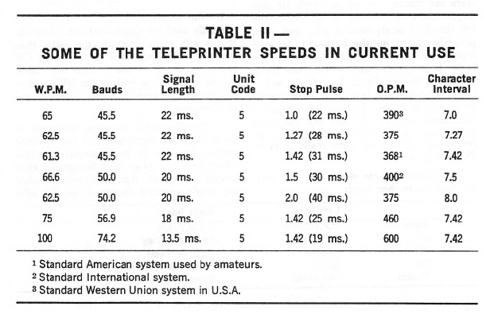 Since the Teletype machine as we know it is a “start-stop” system, every time a key is depressed on the keyboard, this trips off a string of pulses automatically, commencing with the “start” pulse. The “stop” pulse being mark information then determines how soon another “start” pulse could be tripped off by another key being struck. A stop pulse 1.42 times longer than the rest of the pulses is normally used. By adding the start pulse, the 5 information pulses and the 1.42 stop pulse, we get the unit character. This is also referred a S-unit (or 5—level) start-stop code 142 unit character separation pulses with “7.42” unit character separation. European machines use a more logical 1.5 unit stop pulse, as do the newer model 32 and 33 machines in this country.
Since the stop pulse can vary considerably from one system to another, engineers have adopted the term “Baud” to designate the pulse rate. On 60 speed a pulse would lie 22 ins, regardless of the length of the stop pulse following, This is 0.022 seconds and Since the stop pulse can vary considerably from one system to another, engineers have adopted the term “Baud” to designate the pulse rate. On 60 speed a pulse would lie 22 ins, regardless of the length of the stop pulse following, This is 0.022 seconds and: 1/0.0222 =45.45 BAUD As a result, American 60 speed is called 45 Baud, while European speeds are called 50 Baud. since their pulse length is only 20 in. As long as the Baud rate is not changed, a specific machine can copy that speed. whether the stop pulse is 1—unit; 1.42 units~1$ units or whatever. Reference to Table 11 should then answer more questions than we could do with further explanation. If a machine is geared for 75 speed rather than 60 speed, the amateur must obtain new gears for the motor and main shaft. These may he obtained (as well as any other parts needed) from the manufacturer on a COD. basis by the individual owner. Usually a phone call to the local Telephone Company will turn up an individual who is well versed with Teletype maintenance and repair who may be hired after normal working hours to under-take the modification if the owner does not feel equipped to make the change. TYPING SPEED The motor turns at a constant speed of 1800 r.p.m. When a key is depressed on the keyboard this releases a clutch that trips off the keyboard distributor cam and a series of pulses are generated. It makes no difference when a person is typing with “hunt-and-peck” technique at a slow speed or if a tape reader is sending a maximum machine speed of 60 w.p.m.. the important thing to realize is that the time used to transmit one character remains the same-Thus even if the operator is typing only at 5-10 w.p.m., each of those letters is being formed at the rate of 60 w.p.m. Thus all receiving units are constructed so that optimum results are based on this 60 w.p.m. figure. Any “hunt-and-peck” on the keyboard then stands a possibility at least of being received less well than normal maximum machine speed of 60 w.p.m. This is nor to discourage anybody who is a poor typist from obtaining radioteletype equipment. On the contrary, we all had to start sometime—only a few amateurs have been lucky enough to know typing quite well prior to becoming interested in radioteletype ¬ However, we at least wish to point out the advantages in trying to improve ones typing ability—not only will you enjoy this hobby more, but you will get better results at the same time. Thus the operator should endeavor to learn the “touch” system in which all nine fingers are used (we say all nine since the left thumb is rarely used at all!) and when properly placed on the keyboard. he may type at a rapid rate without looking at the keys- It is not as hard to learn the touch system as one might at first think, and I know several enthusiasts who have taught themselves at home. The left little finger is “anchored” on the “A” key and the right little finger is anchored on the carriage return key. That’s all there really is to it-The rest is simple. The following table shows how the various fingers are then used:
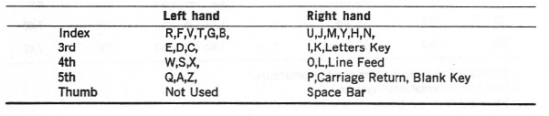 The operator should practice some in his spare time using the “local loop” until some progress is noted. We should like to suggest that until the operator can type: “THE QUICK BROWN FOX JUMPED OVER THE LAZY DOGS BACK" without looking at the keys or his fingers that he will not really enjoy radioteletype as he otherwise might. USING THE PRINTER FOR RADIO SIGNALS Now that you have the printer operating normally on the local loop, you will want to adapt it for radio signals. This involves four items:
THE RECEIVER Most modern communications receivers will work satisfactorily for radioteletype. However, a few receivers will do better than others and some or all of the following suggestions will assist in better printing.
These features should give the prospective operator some overall idea of what an excellent communications receiver can and should offer for optimum reception. THE F.S.K. DEMODULATOR The communications receiver changes the incoming radio—frequency signal into an audio signal. This audio signal is then changed by the f.s.k.. demodulator into on-off d.c. pulses to operate the Teletype printer. There are two methods in current use today by which the demodulator can accomplish this task:
Both systems rely on “f.s.k.” transmission for best results. WHAT IS “F.S.K."? We pointed out earlier that a Teletype machine works from on-off d.c pulses. When transmitting teletype signals on radio frequencies, it is customary to move the earner to a different frequency for the space signals and hack again for the mark signals. This is called “f.s.k.” or Frequency Shift keying. Carrier shifts of 850 cycles are considered "normal” shift and 170 cycle shifts are called “narrow shift”. These two values are more-or-less standard for amateur operation. Commercial operators use other standards ranging from 85 cycles to 850 and even more in some foreign countries. Amaterss are allowed to use any shift up to 900 cycles. This allows adequately for experimentation should the parties he interested. An “F.S.K. Dc—modulator” then. is a unit that changes all f.s.k.. signal into d-c. pulses for the printer. DEMODULATOR THEORY Until the past several years. only one type of basic demodulator design was. known to amateurs-—the FM type using limiters. As a result it really made no difference whether the operator knew anything about FM theory and operation or not. Consequently very little has been printed regarding why a limiter is used and how it affects the rest of the circuit. Recently, however, new techniques have been developed that use no limiters. such systems are based on “AM” (amplitude modulated) concepts and have opened a new horizon to radioteletype reception. Some type of simple explanation should then be included so the operator will know at least a little about the advantages and/or shortcomings of both systems. The Frederick Model 1200 FSK. Demodulator offers both systems in the same unit, and by merely turning the limiter switch on or off, the operator can select either basic system. Fig. 3A shows a simple f.s,k. demodulator block diagram. based on FM principles. A limiter is used to change the audio sine wave from the receiver into square waves of constant output voltage. The output of the limiter then is split into either the mark signal or the space signal by the channel filters which follow. The signals are then changed into d.c. pulses by the detector stage—usually a positive puke for the mark signal and a negative pulse for the space channel. These pulses are- then combined and fed to a trigger stage which in turn operates a keying relay that will handle the 60 ma. current required by the printer.
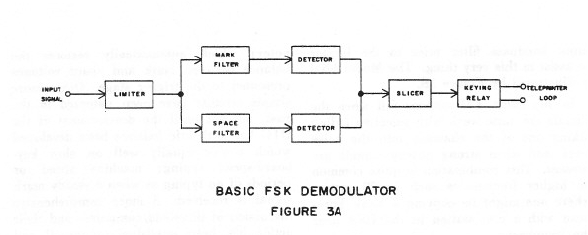 The trigger stage merely tells the keying relay to conduct when it gets a mark pulse and tells the keying relay to shut off when a space pulse comes through. Since the limiter does put out a constant output voltage, then the mark pulse reaching the trigger stage will be the same voltage as that of the space pulse a moment later, although of different polarity. This is called polar keying. If the incoming signal is not tuned correctly of course the output front the mark channel filter might be greater than that of the space channel filter. In this event, a timing error can easily result at the trigger stage. This is known as “bias”. The typical printer can accept ± 45% bias so this rarely becomes much of a problem. Where bias does become a most important problem, however, is when the signal disappears momentarily into the noise level. Actually when the signal is weak, it. is rare that you lose both mark and space into the noise at the same time. Due to “selective fading’ usually one of the two signals has not completely faded. The FM demodulator, due to its limiter, continues to have a constant output voltage although it will now consist primarily of random noise. These noise pulses will be separated by the mark and space filters and be presented to the trigger stage. Since random noise has no intelligence, garble results. ‘Thus the FM system using limiters requires that the signal be substantially above the noise on both the mark and space pulses to print well. We can then say the FM system with limiters requires BOTH the mark and space signal for readable copy. It has little tolerance for signals that are mistuned or that drift during reception. You can also quickly see the disadvantage's of such a system for round-table work, where various stations may be somewhat off the intended frequency. Another serious problem (particularly to amateurs who must share their frequencies with all comers) results from strong nearby signals. Without going into FM theory any further, we can say that the strongest signal on the frequency will capture the limiter and disrupt printing completely, even though that signal may not be on the mark or space frequency. There are several ways to minimize this problem, hut no way to solve it other than abandoning the limiter, One method would be to use a notch filter in the receiver that would remove the offending signal, or at least cut it down to where it is less strong than the desired signal. Another much better method would be to use a pre-limiter filter that would exclude as much as possible that was not directly required for the mark and space channels. The Model 1200 demodulator has such an optimum input bandpass filler prior to the limiter to assist in this very thing. The Model 1200 is illustrated by Figure 3B.
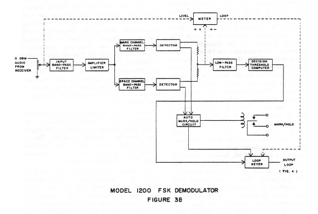 In any event. FM systems fail when the signals are quite weak with selective fading taking one of the channels into the noise level, and when strong nearby signals are present. This combination is quite common on higher frequencies such as 20 meters where one might be copying a weak European with a c.w. station in the USA near the frequency. THE NEW AM LIMITERLESS CONCEPTS Realizing that the FM systems offered severe limitations on radioteletype. several firms both at home and abroad have been working diligently to develop superior methods for improved copy. Such efforts have been highly successful although only recently brought to the attention or the amateur. These concepts are based on limiter-less use so that in the momentary absence of a mark or space signal, the noise would not he amplified by the limiter to the point it would cause the trigger stage to print an error. Merely turning off the limiter. or by-passing it is not the complete answer by a long way. When the limiter was in use, it put out square waves of constant amplitude. If the signal wins properly tuned, the d.c. voltages presented to the trigger stage were then equal for mark and space. although of opposite polarity. As soon as the limiter is turned off, however, this is no longer the case. First of all. sine waves are now passed along, and if any amount of selective fading (that is. mark signal from the receiver is temporarily less than the space signal in amplitude, or vice versa) is encountered, then the mark and space voltages will not be equal at the trigger stage and timing error or distortion will result. Thus it was necessary to develop circuits which would restore the equality of the mark and space voltages at the trigger stage for proper reception. while at the same time not resorting to any form of limiting which would tend to degrade the signal. The more advanced of these new circuits is the DTC (Decision Threshold Computer) which automatically restores the balance between mark and space voltages presented to the trigger stage. Other more simple circuits have been patented in the past. but not until the development of the DTC has authentic balance been developed which works equally well on slow keyboard-speed typing; machine speed or periods of no typing as when a steady mark signal is received. A more comprehensive discussion of threshold computers and their action has been published by myself and W8SDZ. if the reader is interested in the complete evaluation of the system. In general, the DTC samples the mark and/or space voltages to charge storage capacitors which in turn control the bias on the trigger stage to keep its operation symmetrical around the fluctuating mark and space voltages. Another set of storage capacitors in an ingenious application quickly disconnects the first set shortly after a Teletype character is received to compensate for optimum balance. It is this disconnect system that allows the DTC to work equally well on slow-speed typing, which in the past has posed a particular problem to limiter-less copy. In order to adequately use limiter-less copy even with a suitable threshold corrector, great voltage variations at the trigger stage must be faithfully handled. This is known as “dynamic range”. The Frederick Model l200 has over 40 db, of dynamic range in the limiter-less mode. One distinct advantage of using the DTC circuit in a demodulator is that normal copy can be achieved with only one of the two channels operative. This is because of the automatic mark-space balancing by the threshold computer part of the DTC. Thus if either the mark or space channel fades independently into the noise level, normal copy results from the channel that is above the noise level. This is true to some extent even when using the limiter, due to the fact that the threshold corrector’s output overrides the output of the noise level at the trigger stage. This should be explained a little—in the design of a demodulator, great care is taken to equalize the hand-width of the mark and space channel filters. When random noise is fed into the limiter, the output at the trigger stage then is rather small as the positive noise pulses from the mark channel are equalized for the most part by the negative noise pulses from the space channel. These then tend to cancel out. A good demodulator such as the Model 1200 then has an optimum bandwidth low pass filter just prior to the trigger stage which tends so further reduce the output on random noise. Thus in a well-designed system using well-balanced channel filters as well as an optimum bandwidth low-pass filter prior to the trigger stage. the DTC allows excellent copy even with a limiter while tuned to weak signals exhibiting selective- fading. This is a new concept and the Model 1200 exploits it fully. WHEN TO USE WHAT SYSTEM If the demodulator has been designed primarily 1w- use with limiter-less AM concepts. then the addition of a limiter offers tremendous versatility. So much so. in fact. that we are still trying to determine under what conditions which of the two systems would be most beneficial. Certain conditions seem to definitely require one method or the other. so in developing the Model 1200. both systems were included. Thus the- operator can choose either FM with limiting or AM limiter-less by merely flipping a switch on the front panel, We can draw a few guide lines for the operator to consider:
In any event, these are merely “hints’!’ and the operator can quickly go from one system to the other by merely throwing the limiter switch. DIVERSITY RECEPTION Some amateurs may have at least heard of "dual diversity” reception, I doubt if any amateurs at present are using “full diversity” as this requires not only separate receiving antennas but separate receivers as well, together with rather elaborate demodulators which then take the signals from each of the receivers and combine them for optimum results. The antennas are usually rather elaborate affairs and spaced so that if a signal is "down” on the one antenna it will be "up” on the other one. Combining the output of the two then tends to produce a signal that is more uniform in output. in the past, military and same commercial circuits have relied on this complex installation for reduced error rates. The Model 1200 with the Decision Threshold Computer actually makes a diversity installation out of one antenna-receiver-demodulator combination. As you can imagine, the reception of such a system is a vast improvement over the usual system that amateurs have been using. In fact, one Model 1200 has actually given superior results to a full-diversity system using demodulators based on older concepts. The use of the DTC has been a tremendous “shot-in-the-arm” for commercial and government installations. and of course offers amateurs an unbelievable improvement, particularly during conditions of strong nearby stations where in the past they had to quit for the day or else revert to narrow shift in the hopes the reduction in the bandwidth would eliminate the offending station entirely from the receiver’s output, I suppose I sound overly enthusiastic about the value of the DTC in particular, hut is is changing the concept of radioteletype as did the development of the jet airplane change commercial and military air travel. PRIMARY FEATURES OF THE MODEL 1200 While discussing demodulators, you may he interested in some of the features offered in the Frederick Model 1200.
No doubt there are other features which would appeal to the operator that I have not mentioned. One of these certainly would be its instant adaptability to unattended auto-start frequencies, thus opening a new potential activity for amateurs on hF. as well Us on V.JLF. where autostart has been used to a small extent previously - A final word about the- Model 1200 might be or interest and that is the unusual switch positions for the meter.
SUMMARY OF THE MODEL 1200 This all solid-state demodulator is based on the latest principles of radioteletype communication to be found anywhere in the world today. It Uses the exclusive, patented DTC circuit offered by no other manufacturer. It is based both on AM as well as FM principles, and this together with several features offers the greatest versatility ever incorporated in an f.s.k.. demodulator. Its over-all simplicity plus attractive design and small size puts it in a category by itself. It will outperform any other f,s.k, demodulator available commercially to the amateur today. HOW TO CONNECT THE MODEL 1200 INTO THE LOCAL STATION The Model 1200 is normally delivered with no local loop supply so that the operator may incorporate whatever system he might already have available, or prefer to use. An optional loop supply is available at extra cost, however. Fig. 4 shows a loop supply which has been designed specifically for the Model 1200. and is an adaptation of the author’s well-known “Mainline f.s.k.. System”. This not only provides the needed voltage to drive the printer, but also includes a method of providing a signal to key the transmitter. This loop supply can be built for less than $10 if all items are purchased new.
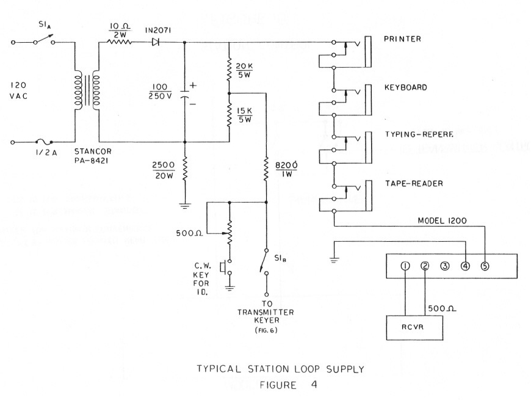 Fixed-value resistors are used for simplicity and lower cost. This circuit will give around 60 ma. current to the printer, depending a little on the local line voltage level. A few milliamperes variation plus or minus will not affect the performance of the printer. If a typing-reperf is to be used at the same time, it would be placed in series with the printer and keyboard. Switch S-1 not only places 110 volts on the local loop but at the same time disconnects the f.s.k. voltage to the transmitter which prevents any possible hum loops from existing during voice operation of the system. TRANSMITTER CONTROL Fig. 5 shows .a very simple means of automatically controlling the station’s operation from a remote location—usually the two switches shown are placed quite near the printer for most convenient operation. Switch S-2 places the model 1200 in standby while the receiver is being tuned. or when no printing is desired from the receiver. Switch S-3 is used when the local operator wishes to transmit—it not only puts the Model 1200 in standby so that the transmitted signal will not attempt to key the printer, but at the same time places the transmitter on the air via its push-to-talk connection. If the transmitter does not have a push-to-talk feature, the switch may be wired in parallel with what ever switch the operator normally closes to transmit.
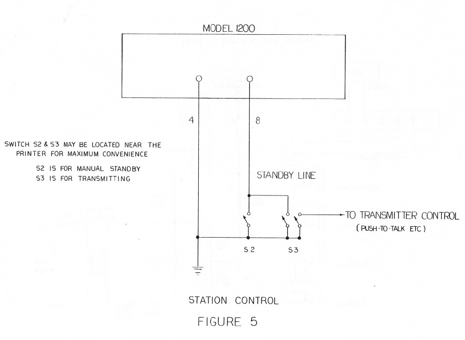 CONNECTING THE TRANSMITTER FOR RADIOTELETYPE Most transmitters— whether intended primarily for single-sideband or for Morse operation can he quite easily adapted ~or radioteletype transmissions. Some manufacturers even include provisions fur radioteletype in their unit~. but almost without exception these systems do not offer as effective or as simple a method as we shall shortly explain. If a small capacitor—say 10 pf. (mmfd.) were connected from the cathode of the v.f.o.. tube to ground. it would change- the frequency of the transmitter by perhaps a few a thousand cycles, more-or-less The frequency may be higher or lower. depending on how the v,f.o, (or ‘p.t.o. is heterodyned in the transmitter. It makes a difference whether frequency goes u p or down, since a correction may easily be made when constructing the keyer that will give "normal” operation. Many individuals have invested large sums of money in their transmitters and do not wish to make any type of change whatsoever with respect to drilling holes or making any type of modification. The author has developed a system that adapts in a few moments to nearly any transmitter and no changes or modifications are needed. A little keyer is constructed such as is shown in Fig. 6, These components may be mounted on a small terminal strip with a connecting pair of wires long enough to reach the local loop on the output of the Model 1200. They need not be shielded since these wires are completely by-passed. The little terminal strip may be quickly mounted under an existing nut or screw in the vicinity of the v.f.o. or p.t.o. in a few moments. The output of the keyer may then he connected around the cathode pin of the v.f.o..or p.t.o.. tube which is then replaced in its socket. If care is used, the shield for the v.f.o. or p.t.o. tube {if one is used) can even be replaced.
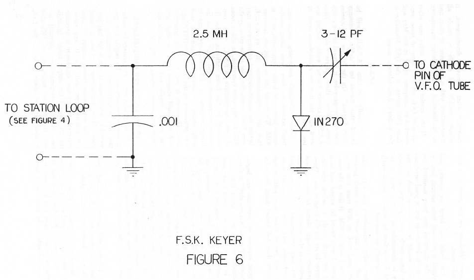 This is all that is necessary to transmit radioteletype. The smaller trimmer capacitor is adjusted for the proper shift. Once the proper setting is achieved, it will never need to be adjusted again unless a different band or portion of me v.f.o.. is used. In this case, the particular transmitter may sometimes invert the signal on some bands. A second keyer may easily be constructed and added to the first; a switch at the Model 1200 then directing the keyer voltage to the proper unit for the band in use. It is customary- to transmit a lower frequency for the space signal. However this seemingly is backwards and somewhat confuses everybody at times, since the lower sideband position of the receiver is used for normal reception. Thus. when listening to a f,s.k. signal on the receiver, space goes higher in audio tone——this in reality means that the transmitted frequency has actually lowered—you can see how this confuses people! At any rate remember three things and ~ will never he confused again (?)
If you build the keyer as shown, and the signal is reversed from normal, just reverse the direction you have mounted the diode on the keyer—in fact. a good construction hint would be to merely “tack in” the diode temporarily until you get an opportunity to determine if it is normal or reversed. It may then be installed permanently when correctly positioned. Some older transmitters use
v.f.o. units that will cause the shift to he much greater on one
band such as 20M from that on a lower hand such as 80M. If this is
the case. additional keyers could he added and then preset for each
band; a switch selecting the proper keyer for the hand in use, There
are usually enough places to mount these tiny keyers in the vicinity
of the v.f.o.. tube A great number of amateurs are beginning to use 170 c.p.s. “narrow shift” at times in addition to the more usual 850 cps, shift, In this event an additional keyer- may be constructed in a few minutes and quickly added to the basic keyer as already explained. The correct keyer then rutty be quickly selected with a switch at the Model 1200. being able to switch immediately from one shift to another and then back again has many advantages over older systems which used adjustable potentiometers for changing the- shift—in this case much confusion existed in trying to set the shift, and additional problems were raised as regulated voltages were necessary and the keyboard had to he placed in a circuit by itself. If a narrow shift keyer is added, the capacitor may then be a 1.5-7 pf- rather than the 3-12 shown for normal shift. We have merely touched upon various methods that may be used to key the transmitter. The system described however is the latest to be developed and has only recently been brought to the attention of most amateurs after extensive development. It adapts quickly and easily to nearly all transmitters with a minimum of effort and no modification of the existing transmitter. If the reader wishes to delve into other types of f.s.k. systems, some of these were covered in complete detail in the May and June 1965 issues of the QST Magazine in the author's Radioteletype series. A.F.S.K. Eventually the term “A.F,SJC” will be heard—this stands for “Audio Frequency Shift Keying”. On the higher frequencies above 30 megacycles, it is legal to use audio tones rather than carrier shift. Thus A.F.S.K. keyers having audio output are used and fed into the microphone input at low level. Some individuals possessing single-side. band transmitter have been using similar audio keyers on lower frequencies such as 80M. We should like to point out, however that the indiscriminate use of AF.S.K. keyers on single-sideband transmitters may very likely cause the user to he cited by the FCC for improper operation, as almost none of the inexpensive A.F.S,K. units constructed by the home enthusiast have the proper characteristics for such use on the lower frequencies. A.F.S.K. keyers can be built which are satisfactory and one such was published in the June 1965 QST Magazine. However, it was relatively expensive and we would suggest that you stick with the cheap, simple and highly satisfactory keyer (or keyers shown in Fig. 6. TRANSCEIVERS FOR RADIOTELETYPE Ifi the reader has a transceiver be wishes to use on radioteletype. he should first contact the manufacturer to determine if it would be acceptable to use it for that purpose. Many transceivers are not designed for the continuous carrier output required for radioteletype and few if any transceivers have any fans or blower to circulate the- air around the output tubes. In addition. few if any transceivers normally accept the standard audio tone of 2975 that is used for the space signal to the f.s.k. demodulator. In addition, it is quite difficult to use a transceiver on radioteletype without resorting to the use of A.F.S.K. keyers with all their inherent problems. As long as the limitations are realized, it is possible to modify them for satisfactory use, hut very few individuals will he interested in such a wove. The average enthusiast can buy a used transmitter intended for Morse operation for well under $100 and thus circumvent the need for using the transceiver for transmitting. In general, the transceiver has the following serious disadvantages:
WHERE TO FIND AMATEUR RADIOTELETYPE SIGNALS There are- perhaps between: 6.000 and 8,000 licensed amateurs with Teletype equipment. This is still a ~drop in the bucket” when compared with those on voice or Morse operation. Thus it is- easily possible to look on all the proper In-quench-s and not find anyone- on the air at that time-, In general. the 20M band is the most active and most reception is concentrated around 14.090 to 14.100. There is little operation prior to the middle of the anternoon when the European countries are often heard. Activity continues until the hand closes late at night. Very little activity is heard around 15M, although it is an excellent band with little interference., Typical frequencies are 21.090 to 21,100- There is little activity on 40M, also, although again it is a good band. A tremendous amount of activity exists on the 8DM hand from 3600 to 3640, with most activity being centered around 3625. The activity on 2M and 6M will depend primarily on the location of the operator. CQ and QST Magazine can be checked for those frequencies as a list is published monthly on the operating page of QST and in the RTTY column of CQ. OPERATING TECHNIQUE The FCC requires that a Morse identification of the station be made at the beginning and end of a normal-length transmission. If a straight c.w- transmission is made, it will print garble on the printer at the other end unless the operator is present to turn off his printer. If “narrow shift c.w. identification” is used, the printer normally stays on mark and prints no errors. The local loop supply shown in Fig. 4 for the Model 1200 has a narrow shift system for Morse identification included. Using the narrow shift Morse identification has an additional advantage—since you do not cut the carrier to send interrupted c.w, the operator knows you have not stopped transmitting—further when he hears the change in shift as the Morse is being transmitted. he knows he can then put the demodulator in standby so the printer will not run wild when the transmitter carrier is cut. When starting a transmission, the Morse identification should be sent first. Then allow a few seconds of carrier for the other party to activate his printer, followed perhaps by a few "Letter Keys". then turn up one of better yet two new lint-s in the event he had let his machine run during your Morse identification. This assures you that his printer has not been left in the middle of a line- accidently. Then he sure to send the identification again on the Teleprinter— this is known as “dual-identification” and is required by law. (When sending by Morse~ only the transmitting station’s call need be sent—this allows automatic Morse keyers to he programmed with the local station’s call.) At the end of the transmission. identity with the Teleprinter. turn up one or better yet two new lines and then send the Morse identification after which the transmitter may be turned off. On most machines, hitting the space bar automatically places the machine back into lower case. This is a most advantageous feature to have on radioteletype. since during marginal conditions a lower-case letters character may be missed, or an erroneous upper-case Figures character may be received. If the machine does not have “onshift-on-space” it may remain in upper-case for extended periods of time, ruining the cop. In any event, remember that most machines use “unshift-on-space” but some operators have blocked off this feature for reasons known only to them. Thus any time you are in upper-case and have occasion to use the space bar, remember it will automatically cause many (but not all) machines to go to lower-case. Therefore be sure to type a new Figures key anytime you want to remain in upper-case after using the space liar. Also other individuals often use the space bar to come out of upper-case. which again prints errors on many machines not equipped for "un-shift-on-space". Examples:
Some attention to these rather small details will please. those whom you contact immensely. besides showing that you are a good operator. TURNING UP A NEW LINE When turning up a new line, there is only one “correct” way to do this. However, some operators invent methods all their own—these quite often wasting paper for some individuals who have added automatic carriage return-line feed systems. Some individuals indiscriminately add extra carriage return keys throughout or at the end of their new line to assure that you will receive it. They do not realize that this wastes paper on many advanced machines since they themselves do not have such protection. At any rate, the following system is considered standard by most press, commercial and military typists;
It is courteous to turn up two new lines at the beginning and end of the transmission so the text will be “inside” any garble that may be printed during the reception of the Morse identification should the operator allow his machine to run. AUTOMATIC CARRIAGE RETURN AND LINE FEED Kits may be purchased for nearly any Teletype machine so that when the printer reaches the end of the line it will automatically turn up a new line and at the same time return the carriage to the left margin, should a normal carriage return be missed. This prohibits “pile-ups” at the right margin in mediocre conditions. Without such a system, the operator either misses wham was typed at such a time, or else must remain to manually return the carriage himself. It should not he difficult to realize the immediate advantages of such a system, Most model 28 and -32 machines already have ;such modifications as standard, while kits may be purchased from various surplus stores and amateurs who stock them for model 15 and 26 machines. Check the classified adds in amateur publications. AUTOSTART When the term autostart is
mentioned, the average amateur often hastens to say he has no
interest in such a thing. as he immediately thinks of 2M or 6M
operation where a friend can call him automatically and have it turn
on the printer. Many amateurs do not have V.H.F. equipment, and thus
assume autostart would merely he something extra to purchase which
they would never use. Not so. This system successfully ignores Morse signals, the bug-a-boo of it her autostart systems for use on the lower h.f. bands. Even though you may never get quite so involved with autostart as to use it while not at home, don’t overlook the tremendous advantages of having a system that will enable you to tune in an interesting round-table and then do other things around the house. Certainly- radioteletype oilers the ability to monitor your friends (or even newscasts on commercial frequencies a without being present at the- time. One's imagination can run wild at the possibilities of a good autostart system—new frequencies may be monitored automatically over short or extended periods; MARS operators~ can accept traffic automatically without being present; messages may be received from your friends. who know what frequency you have left your receiver on—the list grows endlessly. In fact, with the new system incorporated into the Model 1200 the only other demodulator utilizing this new system is the Mainline TT/L unit which is not sold commercially) it is entirely possible that a new concept of automatic reception has begun, for commercial, military- and amateur applications. (We should mention that no special stan or stop technique is required for autostart operation in this system, thus giving the first really effective aurostart system that does not resort to expensive digital cornpurer systems to recognize Teletype characters on the air.) FIXED-FREQUENCY OPERATION Several of us have been operating ran-attended 24-hour autostart on the 80M band for several years now. We use 170 cycle shift. primarily to investigate the problems involved, which so far have never materialized. We have put “locking” crystals across the v.f.o. of the receivers by merely hooking a little wire from a crystal socket under the grid pin and the other wire under the screen grid pin of the vie, tube, which was then replaced. Such receivers stay within 10-15 cycles by the month of the intended frequency if the room temperature does not vary excessively. Since mark tone is 2125 cycles higher than “zero-beat”, the crystal should be purchased for a frequency 2125 cycles higher than the actual frequency of the transmitter. For instance if you were going to monitor 3600. you would use a 3602.123 kilocycle crystal. The main tuning dial of the receiver then becomes a very broad fine tuning to touch up the actual frequency slightly—S Ice. on the receiver tuning dial now affecting the receiver perhaps 50 cycles. With this type of precision and stability, autostart on 8GM suddenly boils down to spending less than $4 for the cry stat assuming the Model 1200 was being used to monitor the frequency. Such a deal does not tie up the receiver except during those periods you are known to be- monitoring—like when away- at work. tor instance. The crystal can be removed by merely unplugging it from the crystal socket (while- leaving socket it self connected to the v.f.o., tube) —normal receiver operation then resulting. The crystal can he replaced at any time by merely putting it back in and the receiver again placed on the proper setting----—this setting is not critical and the "resetability" is excellent. With the extreme latitude offered by the 1200 for copying signals that are off the correct frequency, the other station need not be “exactly” to your frequency for normal reception—however, if he also fixes his receiver like that just mentioned, and then refers to his tuning indicator for best transmitter adjustment. excellent results may be obtained for literally no expense at either end. This may not appeal to you, but on the other hand, we assume many people will be interested in such a possibility when they realize that it is easily possible and for little additional cost to the equipment they already own, again assuming the Model 1200 will be used in connection with the other station equipment. CONCLUSION The information contained in this publication necessarily is far from complete. However, we hope it gives a good overall picture of what the requirements for radioteletype are and how to easily solve them. ‘The information of course has been fashioned around the Frederick Model 1200 f.s.k.. demodulator, and shows how that unit surpasses any other commercial demodulator available to amateurs for both convenience and performance. If questions concerning radioteletype have been raised, perhaps they will be answered in one of the other amateur magazines mentioned such as our own technical series in the QST Magazine that ran throughout the year l%5. We hope you have as much fun with radioteletype as we have had, and are certain the use of the Model 1200 will enhance your pleasure.
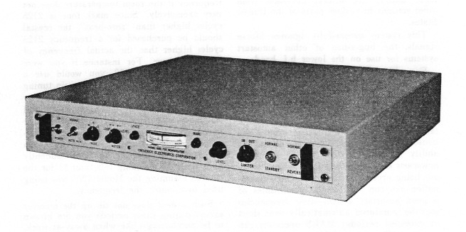 |